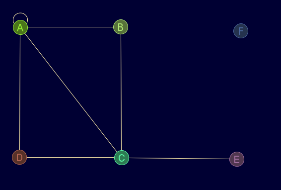
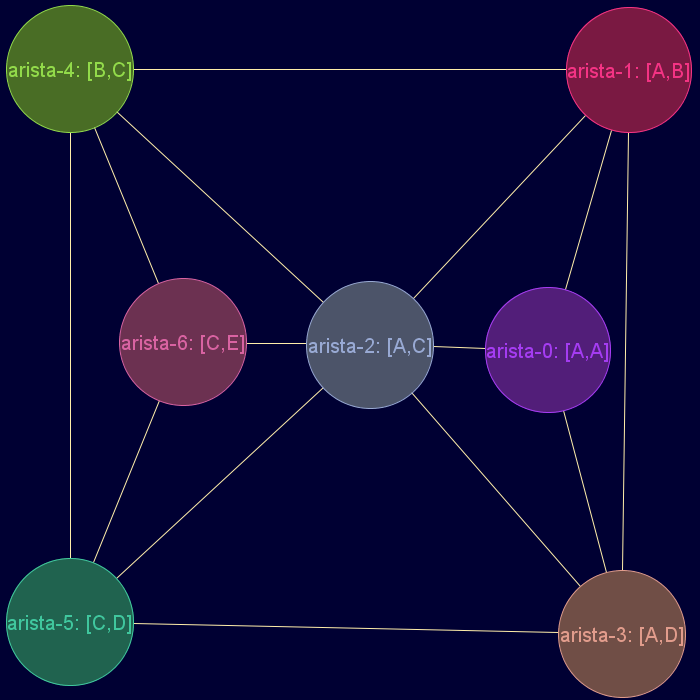

Descripción
Grafo dual de un grafo/pseudografo/multigrafo no dirigido.
Las etiquetas del grafo dual se crearán automáticamnte.
Cadena de entrada
gr_dual
Cadena de salida
GRAFO.dual
Uso
gr_dual(<grafo>)
Ejemplos
gr_nuevo([[1,1,1,1,0,0],[1,0,1,0,0,0],[1,1,0,1,1,0],[1,0,1,0,0,0],[0,0,1,0,0,0],[0,0,0,0,0,0]],['A','B','C','D','E','F'],falso,falso,verdadero,falso)
Salida JMEScriptGUI con visor de grafos v0.1:

gr_dual(gr_nuevo([[1,1,1,1,0,0],[1,0,1,0,0,0],[1,1,0,1,1,0],[1,0,1,0,0,0],[0,0,1,0,0,0],[0,0,0,0,0,0]],['A','B','C','D','E','F'],falso,falso,verdadero,falso))
Diccionario: { 'etiquetas': ['arista-0: [A,A]','arista-1: [A,B]','arista-2: [A,C]','arista-3: [A,D]','arista-4: [B,C]','arista-5: [C,D]','arista-6: [C,E]'] 'ady': [[0,1,1,1,0,0,0],[1,0,1,1,1,0,0],[1,1,0,1,1,1,1],[1,1,1,0,0,1,0],[0,1,1,0,0,1,1],[0,0,1,1,1,0,1],[0,0,1,0,1,1,0]] 'esDirigido': falso 'esPonderado': falso 'esPseudografo': falso 'esMultigrafo': falso 'nodoData': '__null__' 'aristaData': '__null__' }
Salida JMEScriptGUI con visor de grafos v0.1:

Desde / Última modificación
v0.6.2.0